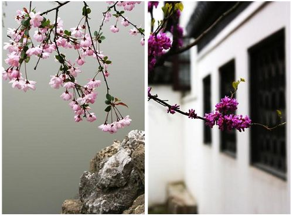
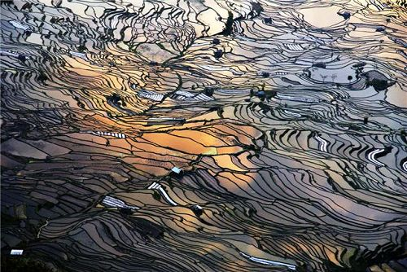

金陵花事 @ Apr 01, 2009
Sherry上周末外出拍海棠和樱花，发来几张给我看。女性拍的PP和男性还是有区别的，非常甜美素雅，为她突飞猛进的摄影惊喜。
很喜欢她在莫愁湖公园拍的第一张“水边的垂丝海棠”，似清新水墨画，好象一碰触那些色彩就会融化了，春天在心里轻轻地挠着痒痒，怎能让人不动心？据说海棠花是一棵一棵的树哦，我以为是种在花盆里一小棵的呢。Sherry准备把南京一年四季的花卉都记录下来，做一个“金陵花事”的集锦。
这些被拍烂了的景色，仍然有动人之处，关键还是相机后面的眼睛。
Sony @200
Shot by Sherry


樱花就没那么好拍了，拍一朵海棠花还可以看细节，一朵樱花就不好看了。

*彩云之南*
Sherry拍摄于2009年春节





还是一点没变，和她拍的PP一样甜美。
Sherry于2008.11.
我有两个笑靥如花的女友，为她们拍照总是赏心悦目。
*** 2005年5月拍摄于南京
*** 2006年冬天拍摄于南京东郊

15 Responses to “金陵花事”
2009-04-01
sherry拍的很美。
关键还是相机后面的眼睛。—恩，我也这么觉得。
2009-04-01
真有种水墨画的感觉，尤其是第一张。赞！
2009-04-01
好想出远门
2009-04-01
BBC拍的美丽中国中我印象最深刻的就是这些梯田
sherry拍得真美
比较喜欢彩云之南中的第一张和第三张
2009-04-01
非常漂亮的照片。不过最喜欢的还是最后一张，Sherry还是那么甜美，不过，看起来却越来越年轻了。。。
2009-04-01
赞～～
2009-04-01
元阳真的精彩，可惜当年去的时候季节不对，只有一种绿色，没有层次。
2009-04-01
有的东西的确不适合拍照，樱花就是。樱花的美不仅仅是花，还在于樱花营造的气氛，那种花瓣随风飘零的气氛，才让樱花与众不同。
梯田是适合拍照的，点，线，面，色彩，传统审美的元素，可以精致地组合进一个画面。
2009-04-02
Sherry那组彩云之南是哪拍的？ 构图很不错。
2009-04-02
谢谢大家捧场啊~~更有动力啦！^_^
Ivy, 彩云之南拍的是云南东川红土地，元阳梯田，和腾冲路边的油菜花。
2009-04-02
你们几个好友都没变，反而越来越年轻，真棒！sherry的片子进步得让我……哈^o^
2009-04-02
航拍?
2009-04-03
心醉一般的美丽 景
融化一样的甜美 人
2009-04-03
kao，来晚了。。。赞一个美女！有潜质。。。。
2009-04-05
不错,真是美人美景
Leave A Reply
存档只读，评论已关闭。